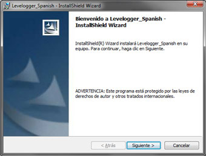
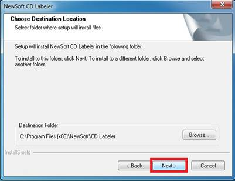

⠀
Para instalar un Software aplicativo deberas seguir normalmente estos pasos.⠀
*Descargar el instalador de un software dando click descargar que hay en paginas.⠀
*Una vez tengas el instalador que normalmente es .exe, tendras que ejecutarlo.⠀
⠀
Seguiran apareciendo este tipo de ventanas que le preguntaran donde quiere almacenar el software y si quiere un icono en el escritorio.⠀
⠀
por ultimo le daremos al boton de finalizar y tendremos nuestro software listo.⠀
Existen estos tipos de softwares aplicativos.⠀
Cargadores de programas. Sistemas operativos Controladores de dispositivos. Herramientas de programación. compiladores, ensambladores. enlazadores, etc. Programas utilitarios. Entorno de escritorio / Interfaz gráfica de usuario. Gestores de ventanas. Línea de comandos. BIOS. Hipervisores. Bootloaders (Gestor de arranque).